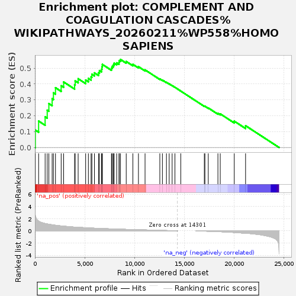
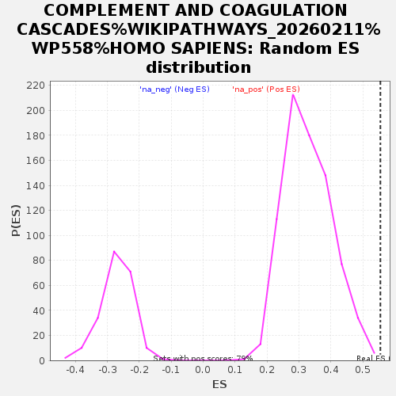

| Dataset | GvHD_A2_Ranks |
| Phenotype | NoPhenotypeAvailable |
| Upregulated in class | na_pos |
| GeneSet | COMPLEMENT AND COAGULATION CASCADES%WIKIPATHWAYS_20260211%WP558%HOMO SAPIENS |
| Enrichment Score (ES) | 0.55507797 |
| Normalized Enrichment Score (NES) | 1.685636 |
| Nominal p-value | 0.0025477707 |
| FDR q-value | 1.0 |
| FWER p-Value | 1.0 |

| SYMBOL | RANK IN GENE LIST | RANK METRIC SCORE | RUNNING ES | CORE ENRICHMENT | |
|---|---|---|---|---|---|
| 1 | SERPIND1 | 38 | 2.517 | 0.1098 | Yes |
| 2 | F5 | 370 | 1.593 | 0.1667 | Yes |
| 3 | C6 | 1023 | 1.207 | 0.1934 | Yes |
| 4 | MASP2 | 1233 | 1.140 | 0.2353 | Yes |
| 5 | F13B | 1399 | 1.087 | 0.2766 | Yes |
| 6 | CLTC | 1727 | 0.996 | 0.3073 | Yes |
| 7 | C1QC | 1856 | 0.963 | 0.3447 | Yes |
| 8 | CR1 | 2062 | 0.918 | 0.3769 | Yes |
| 9 | F2R | 2633 | 0.807 | 0.3893 | Yes |
| 10 | F9 | 2880 | 0.770 | 0.4133 | Yes |
| 11 | C5AR1 | 3980 | 0.612 | 0.3954 | Yes |
| 12 | BDKRB1 | 4036 | 0.606 | 0.4200 | Yes |
| 13 | LMAN1 | 4337 | 0.585 | 0.4336 | Yes |
| 14 | TFPI | 5088 | 0.509 | 0.4254 | Yes |
| 15 | CFH | 5363 | 0.485 | 0.4356 | Yes |
| 16 | C3AR1 | 5633 | 0.459 | 0.4450 | Yes |
| 17 | SERPINA1 | 5714 | 0.452 | 0.4617 | Yes |
| 18 | C9 | 5970 | 0.435 | 0.4705 | Yes |
| 19 | CR2 | 6380 | 0.403 | 0.4716 | Yes |
| 20 | C8G | 6475 | 0.397 | 0.4853 | Yes |
| 21 | PLAT | 6682 | 0.382 | 0.4937 | Yes |
| 22 | KNG1 | 6721 | 0.380 | 0.5090 | Yes |
| 23 | MASP1 | 6766 | 0.378 | 0.5240 | Yes |
| 24 | CD46 | 7678 | 0.321 | 0.5009 | Yes |
| 25 | F3 | 7755 | 0.317 | 0.5118 | Yes |
| 26 | THBD | 7868 | 0.311 | 0.5209 | Yes |
| 27 | C1QA | 7946 | 0.306 | 0.5313 | Yes |
| 28 | F8 | 8200 | 0.293 | 0.5339 | Yes |
| 29 | CD55 | 8435 | 0.281 | 0.5368 | Yes |
| 30 | CFI | 8462 | 0.279 | 0.5481 | Yes |
| 31 | VWF | 8585 | 0.271 | 0.5551 | Yes |
| 32 | F10 | 9159 | 0.241 | 0.5423 | No |
| 33 | SERPINC1 | 9825 | 0.212 | 0.5245 | No |
| 34 | PROC | 10384 | 0.182 | 0.5097 | No |
| 35 | C7 | 11048 | 0.155 | 0.4894 | No |
| 36 | KLKB1 | 12530 | 0.082 | 0.4325 | No |
| 37 | PLAUR | 12789 | 0.072 | 0.4251 | No |
| 38 | PLG | 13195 | 0.052 | 0.4109 | No |
| 39 | SERPINF2 | 13467 | 0.039 | 0.4015 | No |
| 40 | C1R | 13764 | 0.026 | 0.3905 | No |
| 41 | C1QB | 14045 | 0.012 | 0.3796 | No |
| 42 | F2 | 14631 | 0.000 | 0.3557 | No |
| 43 | CFD | 16994 | -0.040 | 0.2608 | No |
| 44 | C2 | 17052 | -0.043 | 0.2604 | No |
| 45 | CLU | 17390 | -0.063 | 0.2494 | No |
| 46 | SERPING1 | 18358 | -0.125 | 0.2153 | No |
| 47 | PROS1 | 18591 | -0.140 | 0.2120 | No |
| 48 | CPB2 | 19996 | -0.260 | 0.1661 | No |
| 49 | F7 | 21132 | -0.402 | 0.1374 | No |
